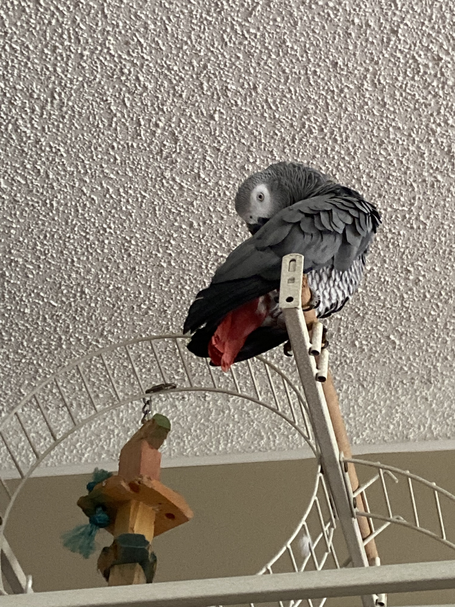
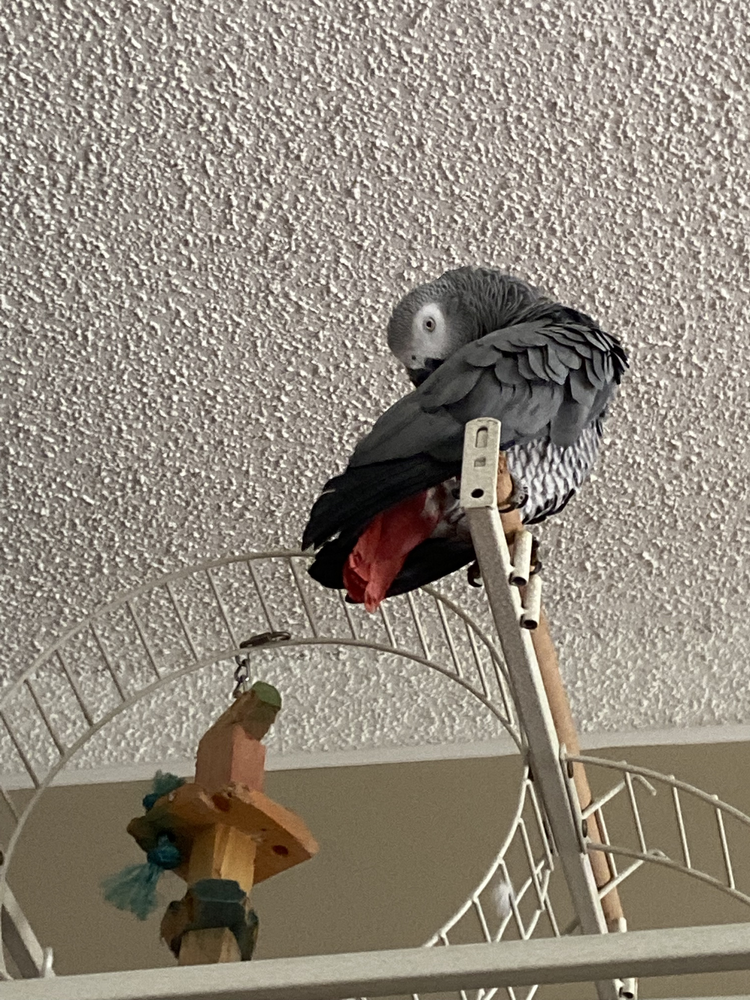
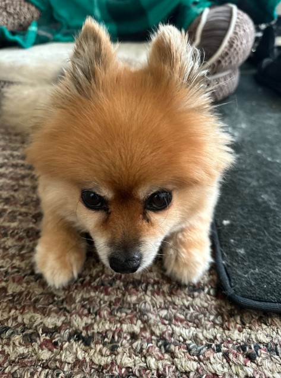
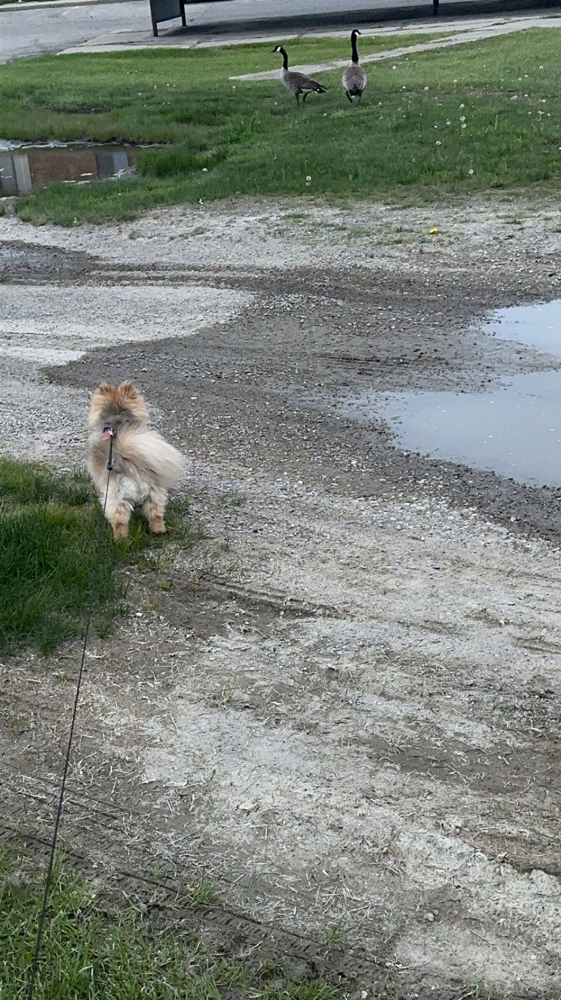
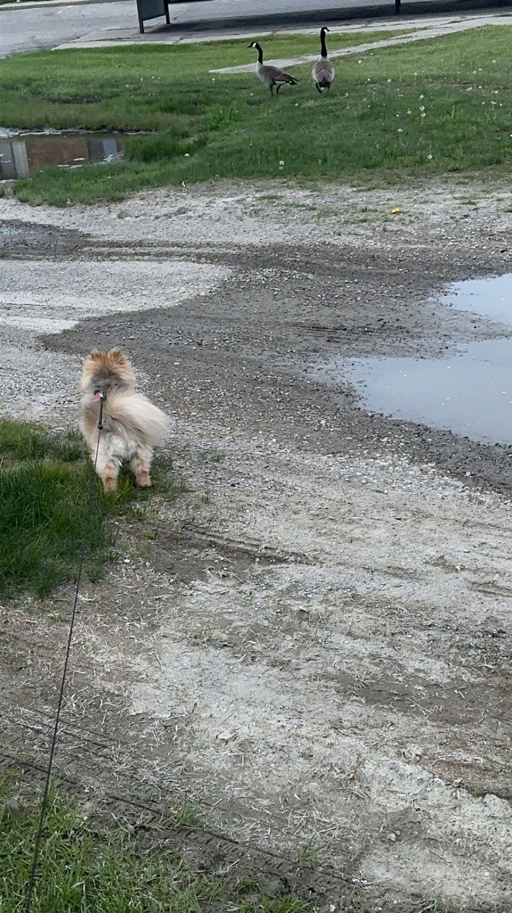

Cooky

Cooky is an 11 month old Bernedoodle. He likes to play, run around, go on walks, eat snacks and treats (not his own dog food), get pets and belly rubs, and cuddle. You can usually find him playing with his toys in the living room, chilling in the office room with my dad, or cooling off in the garage.
He's still a baby, but he can get super hyper. Whenever someone rings the doorbell, Cooky gets really excited, barking and dashing towards the front door. He also jumps really high when he's hyper and wags his tail like crazy. Overall, though, he likes to chill and cuddle just as much as he likes to play.
Photo Gallery


Likes
- Dog cookies
- Pets and belly rubs
- Running around the house
Bacon Q. Dog

Bacon Q. Dog is a 9yr old labradoodle. He prefers to spend his days lounging among the three different beds/couches that his family has gifted him. He enjoys a walk or two around the neighborhood, as long as he can pretend that he doesn't see any of the other animals to avoid the embarrassment of not wanting to admit he has no wolf-like skills in chasing them.
At night just as the rest of the family is ready to relax, Bacon suddenly wants to release all of his energy. He will place his toys on a mini couch and frantically drag the couch around, giving his toys "a ride." There is also a lot of rolling. Lots and lots of rolling.
Photo Gallery


Likes
- Belly rubs
- Playing tug-of-war
- Sneaking onto the couch
Luke

Luke is a six-year-old white cat; he is very energetic and likes to play fetch. Luke has one brother named Jesse. Luke's favorite thing to eat are chicken cat treats.
Luke is very badly behaved. He often jumps up on furniture and drinks out of people's water glasses. He also steals people's jewelry and hides it in his bed. Luke knows several commands; he can sit, jump, follow, play fetch, and give people his paw.
Photo Gallery


Likes
- Luke likes salmon.
- Luke likes to play fech with hair ties.
- Luke likes to sleep in laundry baskets.
Zack

Zack is an African grey parrot, aged around three years old. Zack loves flying and being outside of the cage at all times. He's very nice but bites so much.
Zack's favorite foods are unsalted sunflower seeds and mangos. He loves being able to sit on people's shoulder and talking to them. Zack knows over 500 words and learns more everyday.
Photo Gallery


 

Likes
- Sunflower seeds
- Flying
- Going on walk
Chief
Chief is a 9 year old pomeranian who loves to sleep as much as he can. He naps anywhere, ranging from someone's bed to the grass outside. He enjoys walking outside, but keep watch of him, otherwise he will try to consume geese poop.
He does not like any toys anymore as when he was younger, he watched a bigger toy shred his favorite one to pieces. He used to know how to roll over, but now replaced that memory with a spin as it is much easier.
Photo Gallery

 


Likes
- Sleeping
- Deli Chicken
- Pets behind the ear